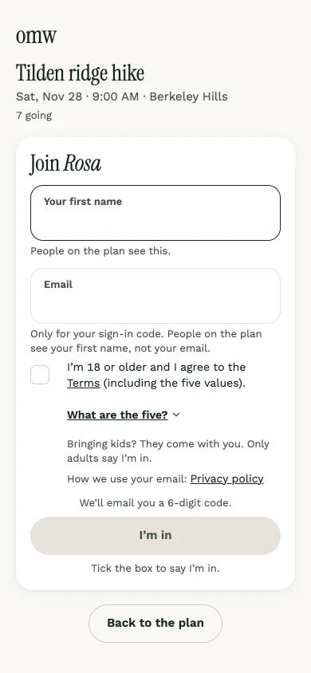
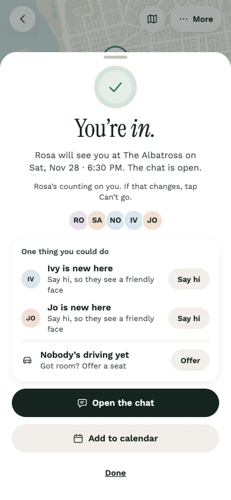
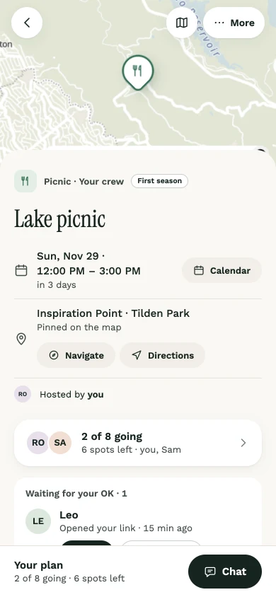
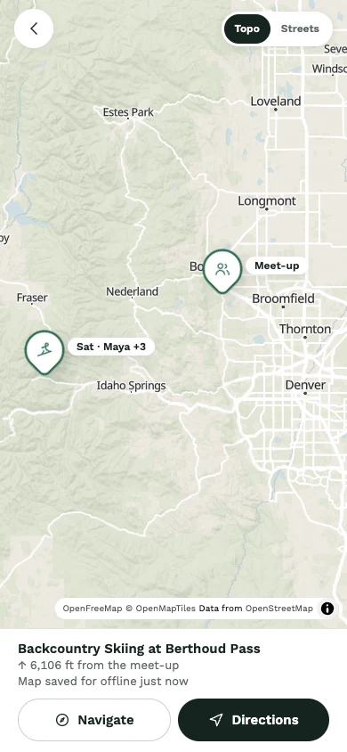
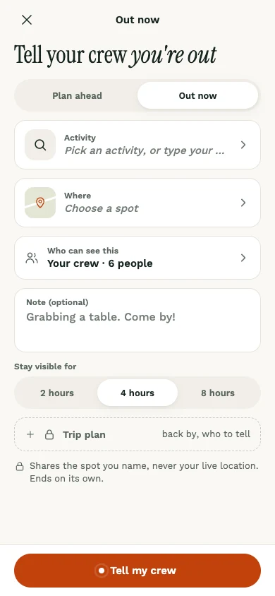

cd portfolio/omw.now && cat README.md # what this is
omw.
an app for making plans with friends, in person
One person and a team of AI agents. Eight days. A product, a brand and a launch plan.
I ran business infrastructure at Profluent, an AI startup, through its $35M and $106M rounds. OMW shows how I’d run operations, design and communications with AI agents: clear rules, fast rounds of testing, and every decision made by a person.
OMW turns “we should hang out” into a plan. Start one (a game night, a cookout, a club ride), drop the link in the group chat, and friends tap I’m in. No account needed to start. Everyone who joins gets a chat, a calendar invite, rides, a shared list and directions.


- built
- November 19–26, 2026, solo, with Claude Code
- role
- Product, launch, brand, interface, copy, engineering, security
- status
- Ready for an invite-only release with a waitlist. Open sign-up is built and waits on legal review.
- stack
- Expo + React Native Web, Supabase Postgres, Cloudflare Workers
git log --oneline --reverse # how it was made
Build it. Test it. Decide. Build it again.
OMW went through twelve rounds. In each one, AI agents played real users and specialist reviewers. I read the results, made the calls, and the next round started from what the last one found.
- 1A working first version in a weekFeatures that didn’t earn their place were cut within a day
- 2Four agents use it as a group of friends on three trips40 findings, all addressed in the next build
- 3Ten landing page concepts, reviewed by six specialists and scored by ten visitorsThe outdoor pitch scored 6.4 of 10 on desire
- 4A sharper story: get people off their phones and into the real worldThe page now leads with “Fewer followers. Better friends.”
- 5Ten testers, then reviews from marketing, engineering, design, content, legal and securityEvery issue got a recommended fix
- 6The launch buildWaitlist, repeating plans, host approval, plans for families
- 7Ten testers on the live app15 of 16 findings fixed the same evening
Steps 3 to 7 took about 30 hours.
cat tests/live-app/FINDINGS.md # testing with simulated users
Before the launch, ten tester agents used the live app on a phone and scored it. Each had a role: a weekly game night host, a parent bringing two kids, a 63-year-old using large text, someone with no invite at all.
| tester | role | clarity | getting in | useful | trust |
|---|---|---|---|---|---|
| Kai, 24 | stranger with a plan link | 7 | 8 | 8 | 8 |
| Helen, 63 | large text, privacy | 7 | 9 | 8 | 8 |
| Ana, 29 | no invite | 6 | 3 | 7 | 7 |
| Marcus, 41 | weekly game night host | 7 | 9 | 7 | 8 |
| Marisol, 50 | weekly trivia, not techy | 6 | 9 | 5 | 8 |
| Kenji, 44 | parent host, 12 families | 7 | 9 | 6 | 8 |
| + 4 more | friend invite, waitlist, monthly host, parent guest | ||||
| average of 10 | 6.9 | 8.0 | 7.0 | 7.7 |
They found 16 problems. Two mattered most: the waitlist email promised repeating plans that the sign-up form didn’t offer, and an automatic title could show a venue’s exact name on a public link. The fixes went out that evening in four parallel branches.
Simulated testers catch friction quickly. Real users decide what the product becomes.
git diff v0.1..v1.0 -- docs/ # the decisions that shaped it
The biggest decision was what OMW is for. It started as an app for outdoor trips. Testing showed that the plans people struggle to make are dinners, game nights and Saturday rides. OMW now covers plans of every kind, and the outdoor tools appear when a plan needs them.
@@ first version → launch @@ - “skiing at Berthoud Pass on Saturday”+ “Thursday game night, every Thursday”- sign up, then make a plan+ start a plan, no account needed- [Join]+ [I’m in] joining means yes- the host sees who can’t go+ “Rosa won’t be told if you can’t go.”- “1 going” on a stranger’s preview+ “a few going” until 3 people are in
What I cut
- Satellite messenger check-insBuilt, reviewed and removed the same day. Phones’ own satellite SOS already covers emergencies.
- MaybeA plan needs a yes or a no. Testers asked for Maybe twice. It stayed out.
- Safety prompts on a game nightTrip plans and emergency contacts show only on remote plans. A potluck doesn’t need them.
cat docs/LAUNCH.md # the launch plan
Every growth idea has to make a real plan more likely to happen, or happen more safely.
If an idea only makes the app bigger or stickier, OMW doesn’t build it. That rule sets the metrics and the limits.
What OMW measures
from the database, with no analytics trackers
- plans that happened: 3+ people, not cancelled
- groups that plan again within 30 days
- trip plans closed with “I’m back”
- reports, and how fast each is handled
What OMW won’t build
decided before launch
- follower counts, likes, public profiles
- contact upload, “people you may know”
- streaks, leaderboards, referral bonuses
- ads, or selling data
Opening in stages
- 1Invite-only: friends join through plan links and invitesa friend joins from a link, and a stranger lands on the waitlist
- 2Invites from the waitlist, in small daily batchesevery invite arrives and signs up cleanly
- 3Company formed and the terms reviewed by a lawyerboth done
- 4Open sign-up, capped per hour and watched closely for two daysreports handled within a day
Stage 1 is ready to ship. Open sign-up is already built: it is one setting away.
open screens/ # the product
Start a plan, share one link, say I’m in, show up.






For ski days, climbs and long drives, OMW adds the outdoor tools: maps saved for offline, a trip plan with a back-by time, and a “Not back yet” alert to the people you chose.





cat docs/VALUES.md # what OMW stands for
OMW is about real bonds and lasting trust. No likes, no follows, no click bait. Five values say what it asks of people, in the order they come up over a plan. Each rests on an old idea, written in plain words.
- Reliable“I’m in” means yes. If that changes, say so early.after Confucius, Analects 2.22
- PreparedKnow what the plan needs, and show the new person how.after Richard Sennett, The Craftsman
- SafeEveryone gets there, and everyone gets home.after Seneca, Letters 91
- TogetherNobody gets left behind or left out.
- GenerousOffer the seat, bring the extra, then forget you did.
open landing/ # the brand
Ten landing page concepts, narrowed by specialist reviews and visitor scores. The page that won leads with the problem everyone knows: the forty-message group chat that never becomes a plan.
Lines from the page
- “Fewer followers. Better friends.”
- “Your friends aren’t content. They’re your crew.”
- “OMW doesn’t call for help; the person you tell does.”
Every colour has one job. Ember means happening now, and nothing else. The copy follows a glossary as strict as the colour tokens.
cat .claude/skills/prerelease/SKILL.md # how agents’ work is checked
Agents wrote most of the code, so no single agent is trusted. Before anything ships, one command runs the same review: typecheck, lint, 418 unit tests and a test of every main screen, then an independent review by a second AI model and four focused reviews for security, correctness, offline use and design. Every finding is checked against the real code. I make every commit and deploy myself.
Every database change gets a dated security review. The first one caught a serious hole: someone could turn a friend request into a friendship with anyone, and see that stranger’s plans. The fix:
-- 0013_security.sql: no forged or unwanted friendships
revoke update on friendships from anon, authenticated;
grant update (status) on friendships to authenticated;
create policy fr_accept on friendships for update to authenticated
using (friend_id = auth.uid() and status = 'pending')
with check (friend_id = auth.uid() and status = 'accepted');
Only the status can change, only from pending to accepted, and only by the person the request was sent to.
wc --summary # by the numbers
Expo SDK 58 · React Native Web · Supabase (Postgres, Auth, Realtime, Storage) · Cloudflare Workers · MapLibre + OpenFreeMap · Photon · Resend
open --walkthrough # get in touch
I’m looking for a role running operations, design and communications with AI agents. I’d be glad to walk you through how OMW was made, from the first tests to the launch plan.
OMW is invite-only. Ask, and I’ll send you a plan link.